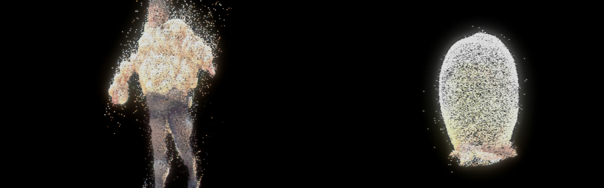
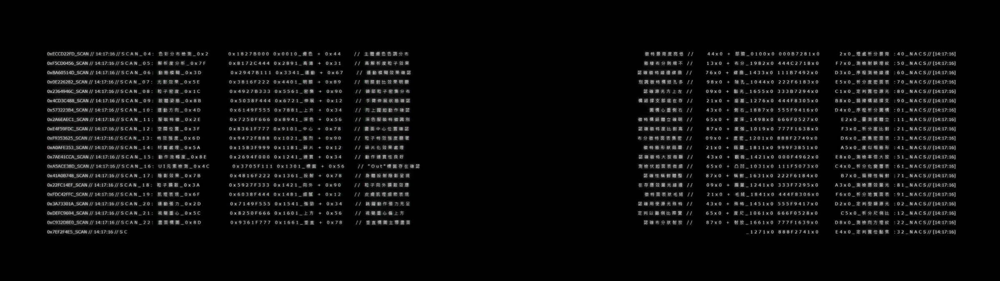
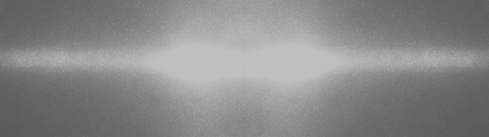
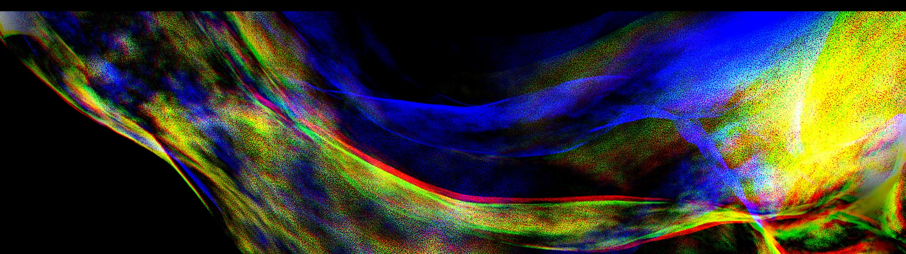
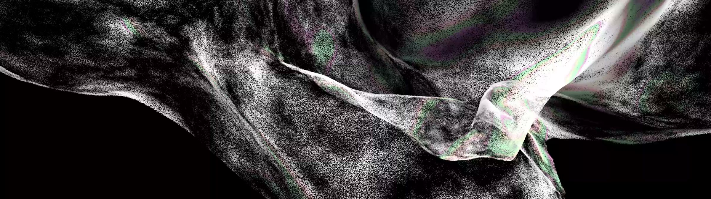
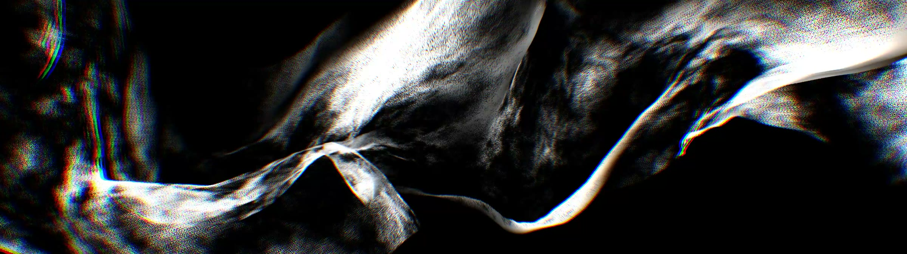
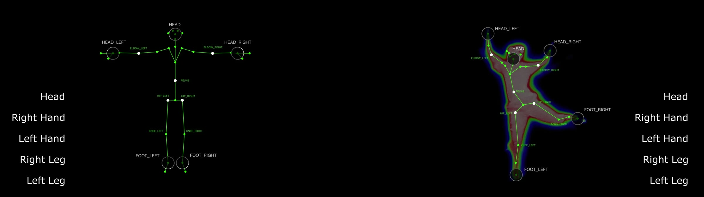
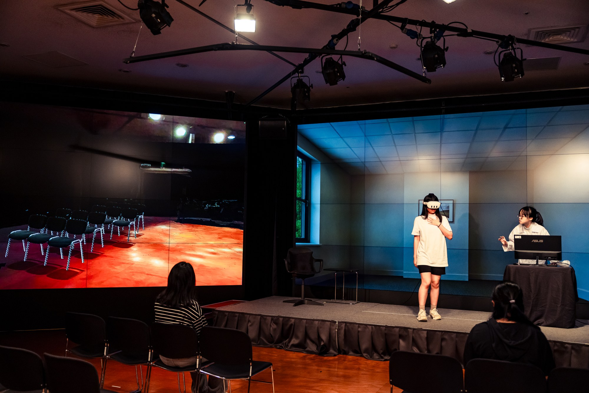

04 — 2024 — Sensor-driven performance · National Taichung Theater LAB X
Fu Pi負皮
以身體感測為主題的舞蹈演出；負責舞台影像的設計與製作。A dance performance built around body sensing; responsible for stage video design and production.
- Medium
- Live performance with body sensing: depth camera, thermal and skeleton tracking, real-time projection, VR
- Project
- Team of six; this page presents the stage video component
- Role
- Stage imagery: the full cue sequence (cue 0–7) for the dual-screen wall, 3840 × 1080, built in TouchDesigner
- Shown
- 2024 National Taichung Theater LAB X — “Young Artists’ Studio: Body Sensing” (selected), work period Jun–Nov 2024, showing 23 Nov 2024








《負皮》為台中國家歌劇院 LAB X 計畫入選作品，取材自《聊齋誌異》〈畫皮〉，將皮膚視為肉身與網路身分之間的介面，探問身體經感測器讀取後所留存的部分。舞者於半透明布幕後演出，攝影機擷取身體的輪廓、溫度與骨架資料，再轉化為投射於舞台上的光影。
Fu Pi was selected for the National Taichung Theater's LAB X programme. Drawing on the Liaozhai tale Painted Skin, it treats skin as an interface between the physical body and online identity, and asks what remains of a body once it has been read by sensors. A dancer performs behind a translucent curtain while cameras capture the body's outline, heat and skeleton; the data returns to the stage as projected light.
負責舞台影像：演出中雙螢幕牆的全部影像段落（cue 0–7），以 TouchDesigner 與 Blender 製作，配合舞蹈段落切換。
Responsible for the stage video: all cues (0–7) on the dual-screen wall, produced in TouchDesigner and Blender and synchronised with the choreography.
計畫期程為 2024 年 6 月至 11 月，11 月 23 日於台中國家歌劇院公開呈現。
The project ran from June to November 2024, with a public presentation at the theatre on 23 November.
- Contribution
- Stage video: all video cues in the performance
- Tools
- TouchDesigner, Blender
- Format
- Dual screen, 3840 × 1080
- Team
- Six members; sensing, dramaturgy and performance by other team members